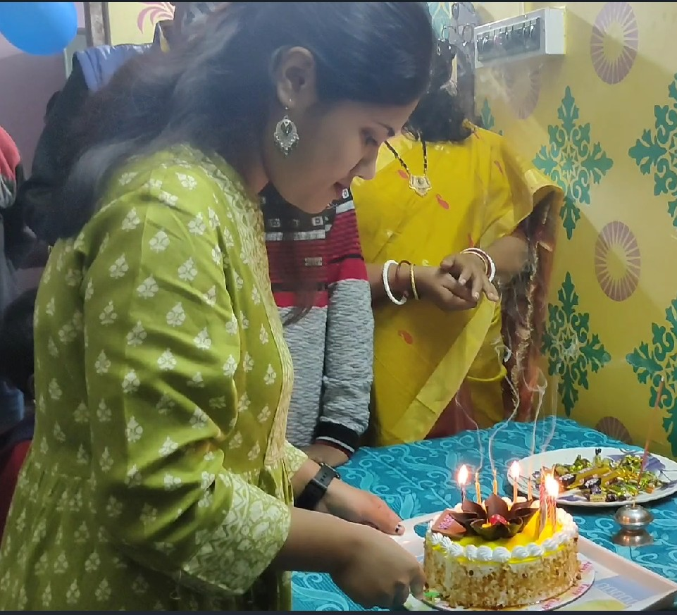
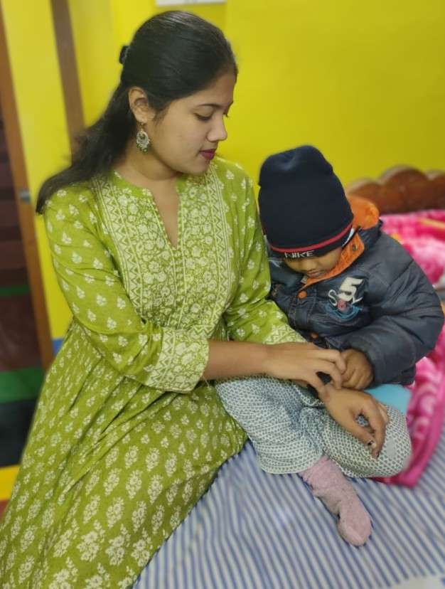
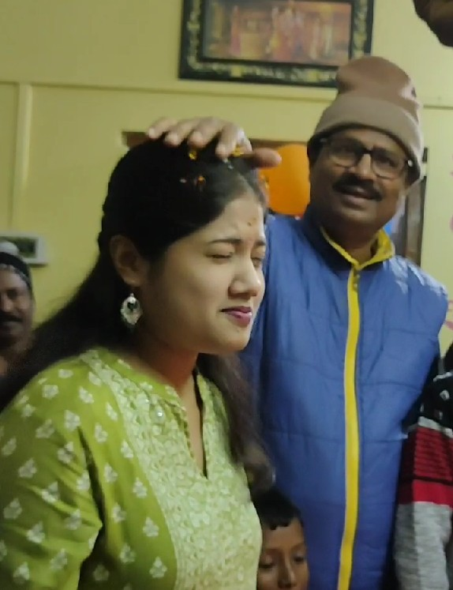

Happy Birthday, Sneha!!
A little sky of our memories -- you can click on Stars & Moon
Moon note
Tap the moon
Tap a star to read a memory.
Photos



Tap a photo to view it larger.
Message
...
Close